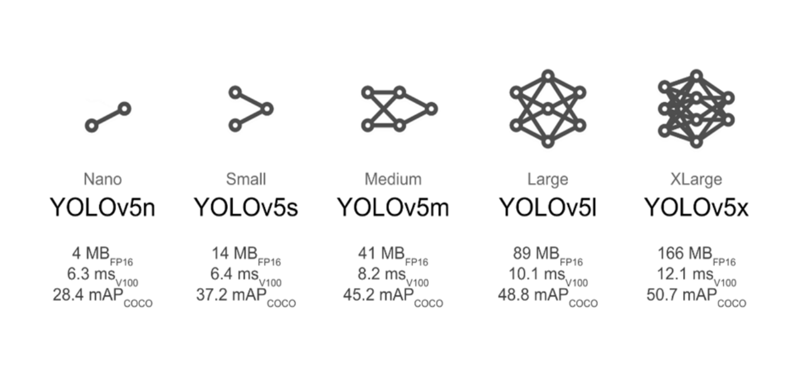
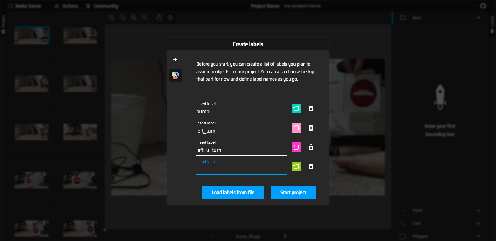
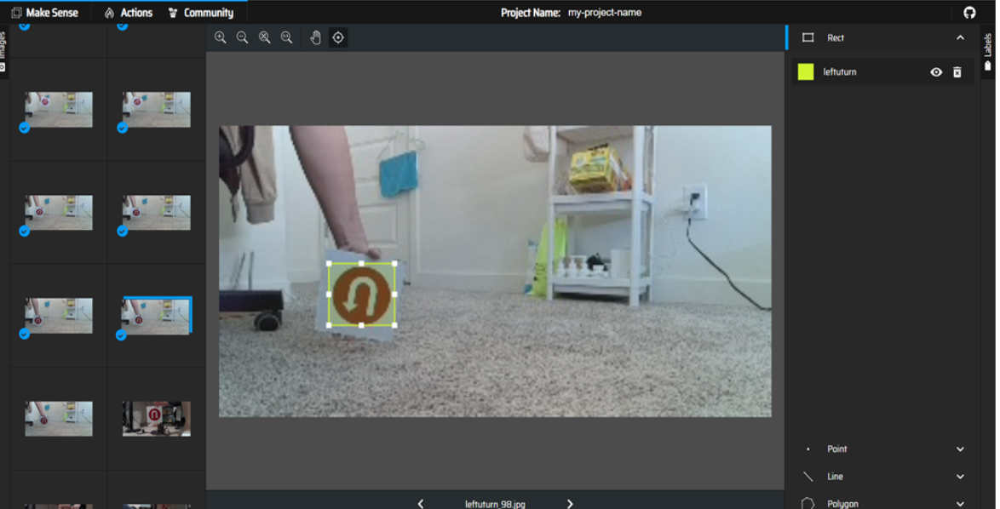
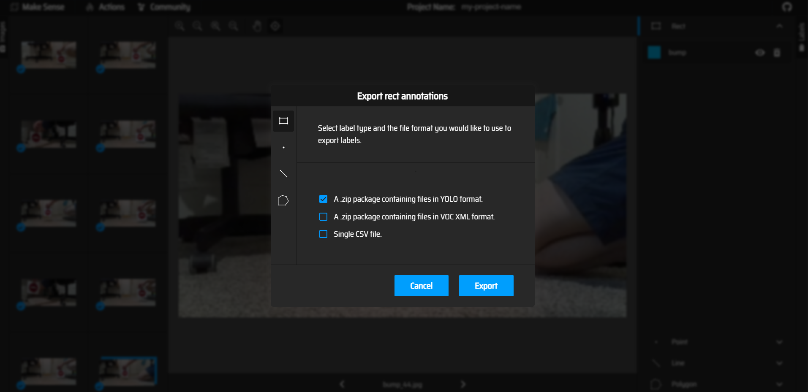
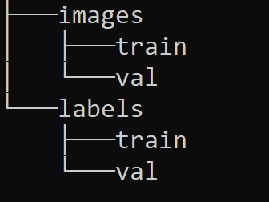
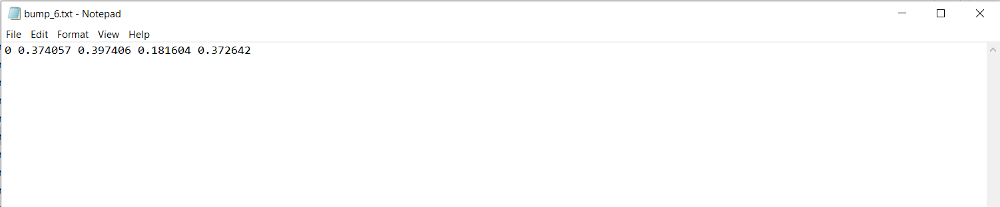

Semi Autonomous Driving using Traffic Signs and Collision Avoidance

Objective
The objective of this project is to develop a semi-autonomous vehicle which can detect different road signals and avoid dynamic obstacles (collision avoidance). YOLO algorithm is used to detect the road signals and classify the detected road sign. Based on the classification of the road signals, perform a predefined set of instructions, and rotate the wheels to follow the desired path and perform dynamic obstacle collision avoidance using LIDAR data.
Approach
- A dataset is created by collecting the images from the turtlebot oak-d camera with ten different traffic signs at different positions and orientations
- Bounding boxes are drawn manually around the traffic signs and labeled to be used for training the yolov5 model
- A yolov5 model is trained on the images and labels using the appropriate hyperparameters, the metrics are evaluated to determine the performance of the model.
- The yolov5 model with the best metrics is deployed on the turtlebot by subscribing to the camera topic "/color/preview/image".
- LIDAR data obtained from the turtlebot is visualized in rviz2
- A subscriber is used to get the LIDAR data from the "/scan" topic and narrow down the detection angle to face the front side of the turtlebot (30° on both cw and ccw direction).
- The LIDAR subscriber and yolov5 model are deployed together along with the motion control program to achieve semi autonomous driving
Workflow
The workflow of our project is shown in the flowchart below.
- Subscribe to the camera topic "/color/preview/image" and send it to the yolov5 model to draw the bounding box and predict the output class of the image
- The predicted output is sent as a topic named "/pred" to the controller node which controls the velocity of turtlebot using "/cmd_vel"
- Simultaneously another subscriber subscribes to the LIDAR topic "/scan".
- The node also narrows the lidar data to some angle, performs operations based on a given distance condtion and sends back a single boolean value to check for obstacles in front of the robot.
- A controller node subscribes to the topics "/pred" and "/laser_avoid and uses the velocity topic "/cmd_vel" to send linear velocity commands and the action lib "rotate_angle" to rotate the bot for a given angle
Data Collection
YOLOv5
YOLO (You Only Look Once) is a popular object detection and classification algorithm. It is very fast and efficient in detecting and classifying objects. YOLO is developed using pytorch and hence it is easier to implement the algorithm in pytorch rather than tensorflow and keras . Yolov5 (yolo version 5) is used in this project . There are also different versions of yolov5 as shown in the image
Creating a Dataset
The images are captured from the turtlebot4 oak-d camera. A subscriber node is used to subscribe to the "/color/preview/image" topic, convert the data from ros image format to opencv format and use the cv2.imwrite() function to save the image. Here is the link for the image subscribe and save node.
The dataset consists of 1800 images for training and 200 images for validation, equally distributed among the 10 classes of traffic signs, shown in the image below.

The shape of the images are 300 by 150 pixels. The height and width of the images are chosen in a such a way that the oak-d camera can process it without any delay while maximizing the ouput width for a wider field of view
The images must be labelled manually for the yolo algorithm. The makesense website is a handy tool to draw bounding boxes for images and label them. Inside the makesense site, click "GetStarted" and upload your images.
The image below shows the process of creating labels for the images.
Bounding boxes are drawn for the images and the correct labels are selected.
Click on "actions"followed by "export annotations" and export the labelled images as "A zip package containing files in YOLO format".
Add the labels to the dataset folder under labels. The dataset folder must be of a certain format for YOLOv5 to use the dataset.The format is as follows
A label is a text file that contains the class of the image (0,1,2,....) followed by the pixel values of the bounding box enclosing the feature on the image. Note that the name of the images and the labels are the same, yolo uses this format to match the images with labels.
Link to Dataset
Training a YOLOv5 model
Prerequisites
Download the required files for training YOLOv5 from the github repository. Link
The libraries required for training YOLOv5 is given under the downloaded "yolov5" folder as "requirements.txt". To install all the required libraries, run the following command while inside the "yolov5" folder.
pip3 install -r requirements.txtTraining the model
To train the model the dataset must be pointed to yolov5. A yaml file is created under yolov5/data and with the code as follows (the yaml files under the data folder can also be edited to create a new one)
Model Deployment
Collision Avoidance
Idea
- The idea behind obstacles avoidance is to use the lidar data and stop the turtlebot when facing an obstacle.
- The turtlebot must move only after the obstacle is removed.
- The 360° LIDAR data is narrowed to 60° facing the front side of the turtlebot as shown in the image.
- A maximum range value is set based on some experiments, the lidar data is filtered with the range values and a bool value is generated.
- The boolean value is used to check if the presence of an obstacle

Visualize LIDAR data
The LIDAR data is published under the "/scan" topic. To publish the "/scan" topic run the launch file as show below
ros2 launch turtlebot4_bringup rplidar.launch.pyIntegrating with Robot Motion
The YOLOv5 model is deployed succesfully with the turtlebot and LIDAR data is filtered to detect obstacles infront of the bot. Next step is to create a program to receive the topic "/pred" from the YOLOv5 node and "/laser_avoid" topic from the LIDAR node to control the motion of the Robot.
Idea
Also add what we plan to do when signs are ketp, like if speed then do thisProgram
1. We start the python program by importing the necessary libraries and messages
#import required python libraries
import rclpy
import math
from rclpy.node import Node
from rclpy.action import ActionClient
# import required messages
from std_msgs.msg import Int32MultiArray
from std_msgs.msg import Bool
from geometry_msgs.msg import Twist
# import RotateAngle from irobot_create_msgs.action
from irobot_create_msgs.action import RotateAngle2. Initalize the class variables, ros2 messages,timer functions, publishers, subscribers, action clients and flag variables
class RobotController(Node):
def __init__(self):
super().__init__("ControllerNode")
# create subscriber object for /image_prediction and /laser_obstacle_status topics
self.image_prediction_subscriber = self.create_subscription(Int32MultiArray,'/image_prediction',self.process_callback,10)
self.laser_subscriber = self.create_subscription(Bool,'/laser_avoid',self.collision_callback,10)
# create publisher object for /cmd_vel topic
self.velocity_publisher = self.create_publisher(Twist,"/cmd_vel",10)
self.velocity_msg = Twist() # create an object for Twist() message
# create an ActionClient object for rotate_angle
self._action_client = ActionClient(self, RotateAngle, 'rotate_angle')
# create a timer object to call the control_robot function
self.timer = self.create_timer(0.2, self.control_robot)
# initialize the flag variables
self.obstacle_status = False
self.robot_control_flag = False
self.robot_rotate_flag = True
self.velocity_msg.linear.x = 0.2 # initialize velocity in m/s
self.min_width = 45 # predefined width in pixel. Will be used for comparison with the bounding box width
The "self.robot_control" flag is used to make sure that the robot velocity is published only if the predictions from "/pred" topic is received
3. Create the callback functions inside the class for the subscribers
def process_callback(self,img_prediction):
# extract data from image_prediction message and find the width
self.output_class = img_prediction.data[0] # Output class number
self.x_min = img_prediction.data[1] # x_min of the predicted bounding box
self.x_max = img_prediction.data[2] # x_max of the predicted bounding box
self.width = self.x_max-self.x_min # width of the predicted bounding box
self.robot_control_flag = True # robot_control_flag is used so that condition is checked only if new message is received. If robot_control_flag is not used, then even if new message is not received, the previous class number will be used and robot keeps moving
def collision_callback(self,obstacle_data):
# update obstacle_status. If there is an obstacle then obstacle_status becomes True
self.obstacle_status = obstacle_data.data
The "self.robot_control_flag" is set to true every time a message is received from the "/pred" topic.
4. Create functions for Rotating the turtlebot using the "rotate_angle" action lib.
def send_goal(self, angle, max_rotation_speed):
# function to rotate the robot. The rotate functionality is provided by irobot_create3
goal_msg = RotateAngle.Goal()
goal_msg.angle = angle
goal_msg.max_rotation_speed = max_rotation_speed
self._action_client.wait_for_server()
self._send_goal_future = self._action_client.send_goal_async(goal_msg)
self._send_goal_future.add_done_callback(self.goal_response_callback)
def goal_response_callback(self, future):
goal_handle = future.result()
if not goal_handle.accepted:
self.get_logger().info('Goal rejected :(')
self.get_logger().info('Goal accepted :)')
self._get_result_future = goal_handle.get_result_async()
self._get_result_future.add_done_callback(self.get_result_callback)
def get_result_callback(self, future):
result = future.result().result
self.get_logger().info('Result: {0}'.format(result))
We use the message "irobot_create_msgs/action/RotateAngle" and action client from the "__init__" function to assign the angle value,rotation speed and send the message.
4. Finally create a function to control the Robot motion using the predictons and lidar data
def control_robot(self):
# Robot controller
if self.obstacle_status:
# if the obstacle_status is True, set the linear x velocity to zero
self.velocity_msg.linear.x = 0.0
self.velocity_publisher.publish(self.velocity_msg)
else:
# if the obstacle_status is False, then class number is checked and velocity command will be sent accordingly
if self.robot_control_flag:
if self.output_class == 9: # straight
self.robot_rotate_flag = True # set the robot_rotate_flag to True in all the if and elif conditions, only then the next rotate will work
self.velocity_msg.linear.x = 0.2
if self.width > self.min_width: # if width of predicted bounding box is greater than predefined min_width, stop the robot
self.velocity_msg.linear.x = 0.0
elif self.output_class == 8: # stop
self.robot_rotate_flag = True
self.velocity_msg.linear.x = 0.2
if self.width > self.min_width-5:
self.velocity_msg.linear.x = 0.0
elif self.output_class == 7: # speed_30
self.robot_rotate_flag = True
self.velocity_msg.linear.x = 0.35
if self.width > self.min_width:
self.velocity_msg.linear.x = 0.0
elif self.output_class == 6: # speed_20
self.robot_rotate_flag = True
self.velocity_msg.linear.x = 0.2
if self.width > self.min_width:
self.velocity_msg.linear.x = 0.0
elif self.output_class == 5: # speed_10
self.robot_rotate_flag = True
self.velocity_msg.linear.x = 0.1
if self.width > self.min_width:
self.velocity_msg.linear.x = 0.0
elif self.output_class == 4: # rightUTurn
if self.width<self.min_width:
self.robot_rotate_flag = True
self.velocity_msg.linear.x = 0.2
elif(self.robot_rotate_flag == True):
self.robot_rotate_flag = False # set the robot_rotate_flag to False, so that send_goal is called just once
self.send_goal(math.radians(-180.0),0.5)
elif self.output_class == 3: # rightTurn
if self.width<self.min_width:
self.robot_rotate_flag = True
self.velocity_msg.linear.x = 0.2
elif(self.robot_rotate_flag == True):
self.robot_rotate_flag = False
self.send_goal(math.radians(-90.0),0.5)
elif self.output_class == 2: # leftUTurn
if self.width<self.min_width:
self.robot_rotate_flag = True
self.velocity_msg.linear.x = 0.2
elif(self.robot_rotate_flag == True):
self.robot_rotate_flag = False
self.send_goal(math.radians(180.0),0.5)
elif self.output_class == 1: # leftTurn
if self.width<self.min_width:
self.robot_rotate_flag = True
self.velocity_msg.linear.x = 0.2
elif(self.robot_rotate_flag == True):
self.robot_rotate_flag = False
self.send_goal(math.radians(90.0),0.5)
elif self.output_class == 0: # bump
self.robot_rotate_flag = True
self.velocity_msg.linear.x = 0.05
if self.width > self.min_width+30:
# +30 is added on right side on relational operator to stop the robot little far from the stop sign. This is to avoid the false detection from the YOLO model when the camera is too close stop sign
self.velocity_msg.linear.x = 0.0
self.velocity_publisher.publish(self.velocity_msg) # publish velocity message
self.robot_control_flag = False
The "self.robot_control_flag" is set to False at the end of the function to wait for the flag to become True in the callback function.
5. Create a main function, create object for the class and call the spin function to stop the node exiting
def main(args=None):
rclpy.init(args=args)
robot = RobotController() # create an object for RobotController class
rclpy.spin(robot)
robot.destroy_node()
rclpy.shutdown()
if __name__ == "__main__":
main()
Down below is the link to the entire package contaning all the python programs
Link